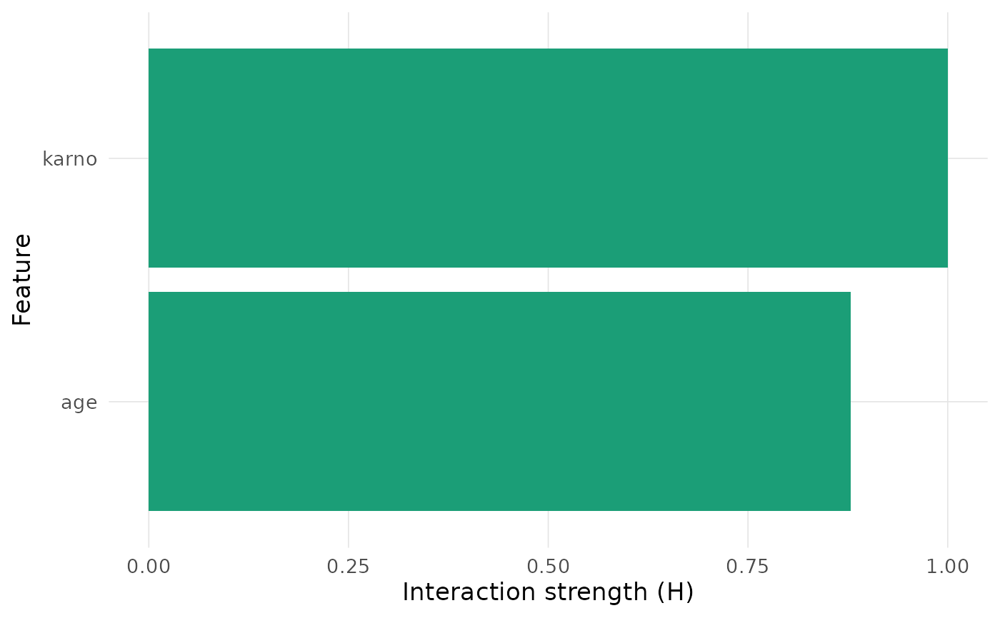

Plot Interaction Strengths for Survival Models
Source:R/compute_interactions.R
plot_interactions.RdVisualizes interaction outputs from compute_interactions as
(i) a ranked bar chart for one-way interactions, (ii) a pairwise heatmap,
or (iii) time-varying interaction trajectories.
Usage
plot_interactions(object, type = c("1way", "heatmap", "time"), title)Arguments
- object
A data frame returned by
compute_interactions()whose columns match the requestedtype.- type
One of
"1way","heatmap", or"time".- title
Plot title. If missing, an automatically generated title is used (none for
"1way"). PassNULLto omit the title entirely (e.g., for journals requiring caption-only figures).
Details
1way: Bars rank features by Friedman-H interaction strength at the target time. heatmap: Tiles show pairwise interaction magnitudes (symmetric). time: Lines show interaction strength vs. time for each feature.
Examples
mod <- fit_coxph(Surv(time, status) ~ age + karno + trt, data = veteran)
times <- c(80, 160)
ia <- compute_interactions(
model = mod,
data = veteran,
times = times,
target_time = 80,
features = c("age", "karno"),
type = "1way",
grid.size = 6
)
plot_interactions(ia, type = "1way")
